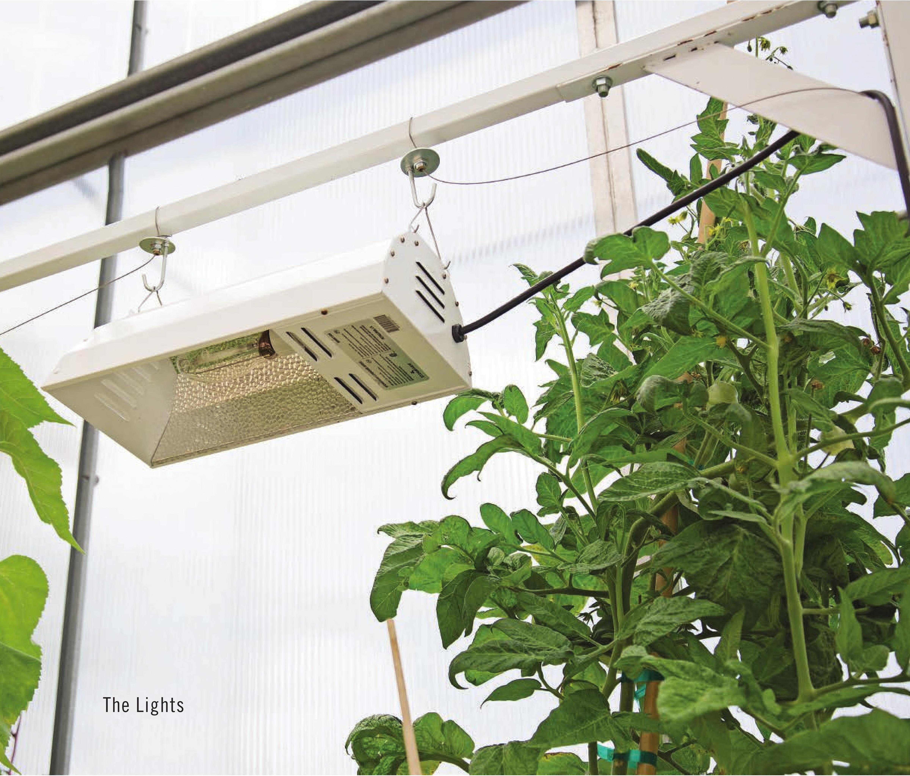

farms to never dump any wastewater, resulting in huge water savings compared to traditional soil farming. The back and forth of advantages and disadvantages proves to me that no one has it perfect yet. There is plenty of opportunity to learn from other growing methods and pool their advantages to create increasingly sustainable methods of farming. INTRODUCTION 17
